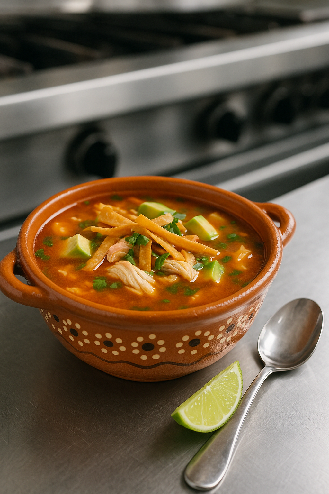
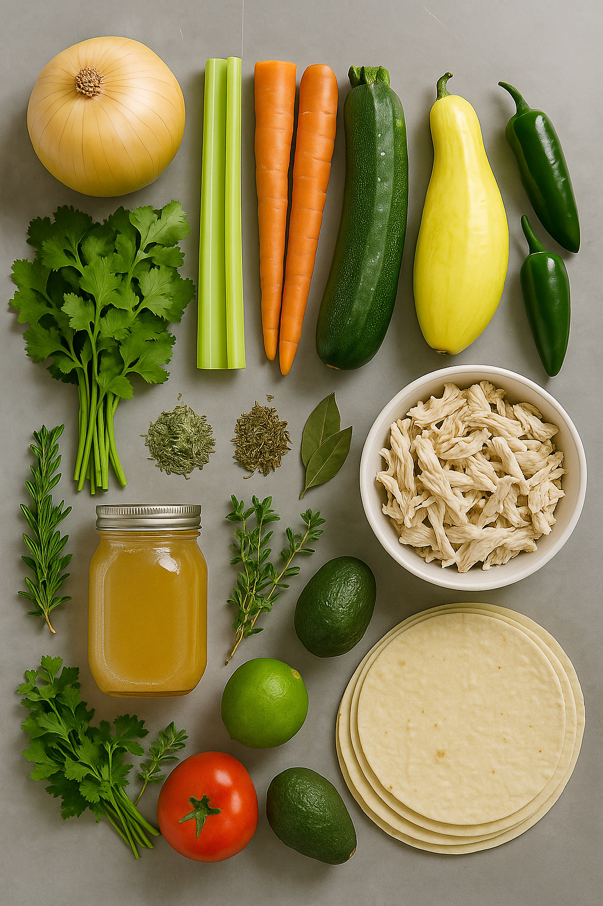

Home
Chicken Tortilla Soup

A Southwest Classic! Chicken Tortilla Soup is a flavorful Mexican-inspired soup made with shredded chicken, tomatoes, onions, garlic, and chili spices, often simmered in a savory broth. It's typically topped with crispy tortilla strips, avocado, cheese, cilantro, and a squeeze of lime, offering a warm, comforting dish with a balance of heat, zest, and texture.
Ingredients
- 1 Yellow Onion
- 2 Garlic Cloves
- 2 Full celery sticks
- 2 Carrots
- 2 Tomatoes
- 1 Zucchini
- 1 Squash
- Cilantro
- Dry Oregano
- Dry Thyme
- 2 Bay Leaves
- Chicken Broth
- Shredded Chicken
- 1 Lime
- Salt & Pepper
- Granulated Garlic
- Granulated Onion

Steps
- Begin by bringing the chicken broth to a boil, then down to a simmer. While simmering
add the 2 bay leaves, 1tbsp of dry Oregano, 1tbsp dry Thyme. Take some of the Cilantro
finely chop them and add them to the simmering broth.
- Small dice half of the onion, the Celery sticks, the Carrots, half of the Yellow Squash,
half of the Zucchini, and 1 de-seeded Jalapeno. Add them to a hot saute pan. While these
begin to cook, chop the Garlic cloves and add them to the saute pan. Before the vegetables
are fully cooked, take them out of the pan and set them aside.
- Dice the Tomatoes and add them to the simmering Broth. After 5 minutes, add the sauteed vegetables.
- After 10 minutes add the Shredded Chicken. Wait 5 minutes and season to taste with Salt, Pepper,
Granulated Garlic and Onion. Chop the cilantro leafs and add them to the soup.
- Serve in a bowl, add fried tortilla strips, add lime, and garnish with Avocado Slices
- Enjoy!